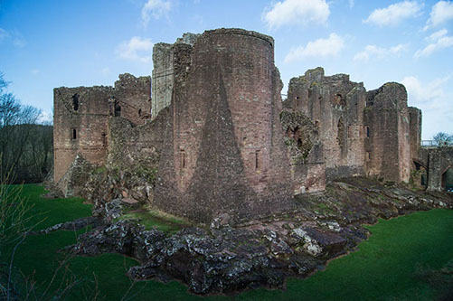
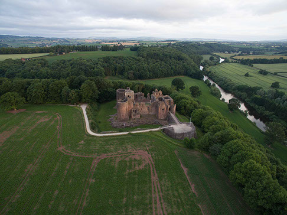
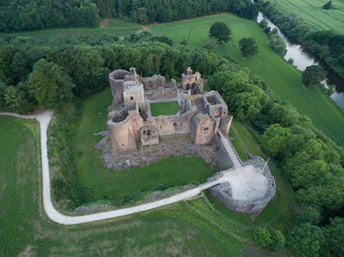

England > Midlands
GOODRICH CASTLE
Goodrich Castle was built in the late eleventh or early twelfth century. It was an important border fortress responsible for securing southern Herefordshire but, despite its location, it had a relatively peaceful history until the Civil War. However, during that conflict it was used as a Royalist base resulting in a siege and bombardment that damaged it beyond repair.
History
Gallery
Getting There
Early Castle
Goodrich Castle stands on the summit of a spur of high ground overlooking a bend in the River Wye and was also in the vicinity of a fording point. At the time of the Domesday survey of 1086, the nearest recorded manor was Howle which was under the ownership of Godric Mappeson, a name which suggests that he was an Englishman who had managed to hold onto his possessions after the Norman Conquest. A nearby earthwork, Great Howle Castle , was possibly linked with this individual. However, Goodrich Castle itself was not mentioned although the survey did often omit such detail. Instead the first record of the fortification dates from 1101 where it was described as "Godric's Castle". This fortification was probably an earth and timber structure although the precise form this took is uncertain as evidence has been buried by the later structure. After Godric's death the estate passed into the hands of a Norman baron, William fitz Baderon.
de Clare
The death of Henry I in 1135, without a male heir, meant England slipped into civil war. Known as the Anarchy, the former King's nephew, Stephen of Blois, and Henry's daughter, Matilda, vied for control. Matilda's support was strongest in the south-west and the Welsh Marches with Herefordshire firmly in her camp. Accordingly Stephen engineered the transfer of Goodrich Castle to his ally, Gilbert de Clare, Earl of Pembroke. He held the castle until his death in 1148 when it passed to his son, Richard 'Strongbow' de Clare.
The Anarchy ended with an agreement that Stephen would rule for life and be followed by Matilda's son, Henry. He succeeded to the throne in 1154 and Richard de Clare found himself out of favour with his estates briefly confiscated by the Crown. Throughout this turbulent period the stone Keep was constructed at Goodrich either by Gilbert, Richard or Henry II. Richard's relationship with the Crown remained frosty particularly when he defied Royal orders by invading Ireland in 1170 where he achieved significant military success including the capture of Dublin. When he died in 1176, his heirs were minors and accordingly his estates were taken into Crown ownership.
Marshal
Richard's daughter and heir, Isabella, married William Marshal although the estates of the de Clare's were only released by the Crown piecemeal. He was granted Chepstow and Usk castles immediately but Goodrich was withheld. King John granted him the title of Earl of Pembroke in 1199 and finally he was granted Goodrich Castle in 1204. This was possibly in compensation for the loss of his lands in Normandy which had been seized when the French annexed the province. William made numerous upgrades to the castle at this time and this proved timely as England slipped into a period of internal strife. The loss of the continental possessions, along with the King's cruelty and perceived incompetence, led to his Barons compelling him to sign Magna Carta. However, when John repudiated that charter, the country descended into the First Barons' War and the King's opponents invited Prince Louis of France to invade and take the Crown. The heat was taken out of the war when John died in October 1216 and, on his deathbed, he named William Marshal as protector during the minority of his son, Henry III. It was a wise choice as William successfully reconciled most of the Barons with the new regime thus ending the war.
William's successor, Richard, was less loyal to the Royal family. He rebelled against Henry III in 1233 and forged an alliance with the Welsh hoping to force the King to remove some unpopular favourites from his court. This prompted Henry to seize Goodrich Castle forcing Richard to withdraw to Ireland. Although it was restored to his successors, the male line of the Marshal family failed in 1245.
de Valence
The castle and Earldom passed through marriage to William de Valence in 1245. Although he was frequently absent from the castle, including fighting with Prince Edward (later Edward I) on crusade and in the Welsh and French wars, William commissioned substantial upgrades to Goodrich. The distinctive towers and the barbican were constructed at this time. The castle's internal buildings were also rebuilt. Much of what is visible today dates from this period.
In 1307 Goodrich Castle passed to Aymer de Valence. He was actively involved in the Royal court and had distinguished himself when Edward I sent him north to defeat Robert the Bruce at the Battle of Methven (1306) . He was also sent to France to negotiate the marriage between Edward II and Princess Isabella of France. Later, Aymer participated in the English military campaign that ended in the calamitous defeat of the English forces at the Battle of Bannockburn (1314) where he helped Edward II flee the battlefield and escape captivity. However, Aymer was financially ruined in 1317 when he was captured and ransomed by a French nobleman whilst on a diplomatic mission to the Pope.
Aymer died without male heir and the castle then passed to his niece, Elizabeth Comyn. As she was a minor she became a Ward of the Crown. However, at this time the Royal court was dominated by the powerful Despenser family. Hugh le Despenser the younger attempted to pressurise, then kidnapped, Elizabeth forcing her to cede Goodrich Castle. He then held it until 1326 when Elizabeth married Lord Richard Talbot, an experienced soldier, who seized the castle. Both Edward II and the Despensers were overthrown the same year and thus Goodrich remained with the Talbot line.
Later Medieval Period
In September 1400 Owain Glyndŵr, a descendant of the former Princes of Powys, led a Welsh uprising against English rule. Simmering discontent, coupled with political instability in England, saw the rebellion spread across Wales. The then owner of Goodrich was Lord Gilbert Talbot, son of Richard and another experienced soldier. He put the castle in good order enabling it to withstand a Welsh incursion into the area in June 1404. The Welsh tried again in March 1405 but Talbot led a successful campaign that repelled them. He continued to play an active part in opposing the rebellion until it petered out in 1409. He later went on to serve with Henry V in Normandy and died in Rouen in 1418. Goodrich passed to his brother, John (later Earl of Shrewsbury), who was also engaged in fighting in France and died attempting to save Castillon from a French siege in 1453.
For the rest of the fifteenth and the entire sixteenth century, Goodrich Castle remained owned by the Earls of Shrewsbury who were largely absentee owners. The castle was taken into Crown ownership in 1619 as part of a debt settlement package and passed to the Earl of Kent but it was managed by his agent, Richard Tyler.
Civil War
The Civil War commenced in Autumn 1642 and over the subsequent year the Royalists vied for control of the south-west. The important port of Gloucester, including its bridge over the River Severn, was in Parliamentary hands and a Royalist attempt in Summer 1643 to take control of it had failed. Instead the Royalists established their regional base at Goodrich Castle with a garrison installed there under Henry Lingen. His forces were able to harry the supply lines for the Parliamentary force besieging Hereford. Following the decisive defeat at the Battle of Naseby (1645) , Royalist fortunes declined with Hereford falling in December 1645. Nevertheless Goodrich remained defiant and its garrison raided the local area to re-provision the castle. By June 1646 Parliament had seen enough and sent Colonel John Birch to besiege the castle. Lingen refused to surrender and a two month siege only ended when Birch used explosive mortars to bring down the walls. The castle was ruined by this action and was never repaired.
Bibliography
Allen, R (1976). English Castles . Batsford, London.
Armitage, E.S (1904). Early Norman Castles of the British Isles . English Historical Review Vol 14 (Reprinted by Amazon).
Ashbee, J (2005). Goodrich Castle . English Heritiage, London.
Creighton, O.H (2002). Castles and Landscapes: Power, Community and Fortification in Medieval England . Equinox, Bristol.
Douglas, D.C and Whitelock, D (ed) (1979). English Historical Documents Vol 1 (c500-1042) . Routledge, London.
Douglas, D.C and Greeaway, G.W (ed) (1981). English Historical Documents Vol 2 (1042-1189) . Routledge, London.
Douglas, D.C and Rothwell, H (ed) (1975). English Historical Documents Vol 3 (1189-1327) . Routledge, London.
Historic England (1966). Goodrich Castle, List entry 1348917 . Historic England, London.
King, C.D.J (1983). Castellarium anglicanum: an index and bibliography of the castles in England, Wales and the Islands . Kraus International Publications.
Liddiard, R (2005). Castles in Context: Power, Symbolism and Landscape 1066-1500 . Macclesfield.
Morris, M (2003). Castle: A History of the Buildings that Shaped Medieval Britain . Windmill Books, London.
Remfry, P (2015). Goodrich Castle and the families of Godric Mapson, Monmouth, Clare, Marshall, Montchesney, Valence, Despenser and Talbot . SCS Publishing.
Sewell, R.C (1846). Gesta Stephani, Regis Anglorum et Ducis Normannorum .
Shoesmith, R (2014). Goodrich Castle: Its History and Buildings . Logaston Press.
Shoesmith, R (1995). The Civil War in Hereford . Logaston Press, Hereford.
What's There?
Visit Official Website
Goodrich Castle consists of the substantial ruins of a major medieval fortress. Of particular interest is the Barbican which is identical in size to that built (but now vanished) at the Tower of London . One of the siege mortars from 1646 is also on display.
Goodrich Castle . The castle occupies a spur of high ground overlooking the River Wye. These strong natural defences mean it may have been the site of an Iron Age hillfort. If so these defences, along with the remains of the original late eleventh/early twelfth century castle, are buried under the later fortification. The vast barbican dominants the footprint of the castle.
Keep . The Keep was the first part of the castle to be built in stone. It was built in the latter half of the twelfth century but whether this was by Gilbert de Clare, his son Richard or Henry II is unclear. As can be seen from the aerial picture, the Keep is now dwarfed by the surrounding structures.
Barbican . The large semi-circular Barbican is almost identical to the one built (but now demolished) at the Tower of London . It is almost certain that it was constructed by the same team who were loaned by Edward I to William de Valence, Earl of Pembroke to assist with the upgrading of his fortification at Goodrich.
Towers . The towers at Goodrich have high spur buttresses which was a popular configuration in the late thirteenth century. Similar arrangements can be seen at Chepstow and Kidwelly castles, both owned by the Earl of Pembroke, and also at the fortifications of peers such as the Earl of Gloucester's Caerphilly Castle .
Roaring Meg . The 1646 siege ended once Colonel John Birch brought heavy mortars to bombard Goodrich into surrender. One of them, Roaring Meg, is on display within the castle grounds.
Rock Base . The castle was built on top of a rock base.
View . The castle has commanding views over the surrounding area.
Goodrich Castle is located three miles south west of Ross-on-Wye. The castle is in the care of English Heritage and is major tourist attraction. It's well sign-posted and served by a large, dedicated car park.
Car Park
HR9 6HX
51.873975N 2.617822W
No Postcode
51.876829N 2.615892W
(c) Copyright 2019 CastlesFortsBattles.co.uk
Recovered original photographs, plans and images


